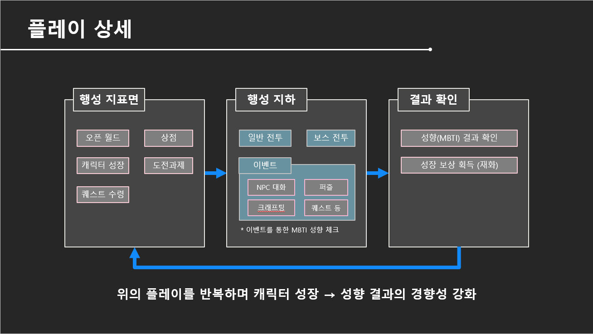

게임기획 스터디 · 2023.10 — 2024.01
로그라이트 액션 RPG 《Drill & ME》
행성에 불시착한 주인공이 자신의 주무기인 ‘드릴’을 가지고 지하 던전을 공략하는 로그라이트 액션 RPG 게임입니다. 퀘스트가 있고, 싸우는 재미가 있으며, N회차 가능한 게임을 만들기 위해 미니 게임부터 함께한 프로그래머 분들과 최선을 다했습니다. 약 2달 정도의 일정을 수립하여 진행했고 기한 안에 플레이어블한 빌드가 나왔습니다.
- 기간
- 2023.10.31 — 2024.01.25
58일, 주말 제외 - 역할
- 기획팀장 · 시스템 기획 · 컨텐츠 기획 · 밸런싱
- 엔진
- Unity 2021.3.27f1 · Git
- 플랫폼
- VR — PC, 오큘러스 퀘스트 2
플레이 영상
01
게임 소개
불시착한 충격으로 기억을 잃은 탐험자(플레이어)가 기억을 되찾기 위해 드릴을 손에 들고 행성 지하의 던전을 탐험하며 악의 무리 <드림 스토커>를 처치하는 로그라이트 액션 RPG 게임
액션 RPG로그라이트VR
02
담당 업무
01기획 팀장
게임 방향 설정
- 제안서 작성을 통해 프로젝트의 방향과 구조를 설명

협업 툴 세팅
- Notion · JIRA · Confluence
02시스템 기획
03컨텐츠 기획
시나리오/설정 기획서
- 전체적인 시나리오 컨셉 및 방향 제시
- PC의 배경, 세계관 설정
- 보스(1층, 5층) 시나리오 및 대사
04밸런싱
- 재화(골드, 경험치) 밸런스의 방향 제시
- PC 스탯의 기본 수치와 강화 관련 밸런스의 방향 제시
- 소모 아이템(포션, 폭탄 등)의 가격과 성능
- 크래프팅 관련 수치 밸런스
03
인원 구성
이름을 누르면 담당 범위가 펼쳐집니다기획
김현택 / 기획 팀장
- 시스템 기획 — 절차적 생성, 무기, 인벤토리
- 컨텐츠 기획 — 전체 시놉시스, 세계관, NPC 2종, 보스 설정 및 대사(1층, 5층)
김정훈 / PM
- 시스템 기획 — 몬스터 AI, 보스 공격 패턴, 보스 스테이지 레벨 디자인
- 컨텐츠 기획 — 몬스터 설정/배경, 보스 게임 Flow, 보스 설정 및 대사(4층)
김지영 / 팀원
- 시스템 기획 — 퀘스트, NPC, 상점, 재화, MBTI 체크
- 컨텐츠 기획 — 퀘스트, 로비 디자인, NPC 설정 및 대사, 보스 설정 및 대사(2층)
김용규 / 팀원
- 시스템 기획 — PC, 스킬, 상태창, 버프&디버프 UI
- 컨텐츠 기획 — 스킬 4종, 보스 설정 및 대사(3층)
- 밸런싱 기획 — 재화, 전투
프로그래밍
윤지환 / 프로그래밍 팀장
- 플레이어(이동, 스테이터스), 무기(드릴, 훅샷), 드릴 스킬, 업그레이드 시스템, MBTI 체크 시스템, 오디오 믹서
최진성 / 메인
- 데이터(데이터매니저, DB연동, 구글시트, CSV), 인벤토리, 아이템, 상점, 퀘스트, 크래프팅, 보스 구조 및 기능 연결
최승규 / 서브
- BSP 맵 동적 랜덤생성, 동적 네비게이션 베이크, NPC(대화, UI, 보상, 선택지), 오브젝트 생성, 던전 문·뚫리는 벽
진영수 / 서브
- 몬스터 구현, 몬스터 스킬(디버프) 구현, 보스 공격 패턴